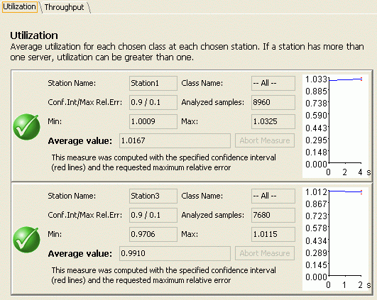

Simulation Results
__________
After a simulation has completed successfully you will obtain a window like the following.

Performance indices defined in the model are represented by every tab of this window.
Every tab reports in it all defined indices per station.
All indices have a list of computed values (resulting from simulation) and a little graph as a summary of them.
Values available are:
Station Name: This is the name of the station referred by the current index
Class Name: This is the name of the class referred by the current index (could be also for All Class)
Conf.In / Max Rel.Err.: Confidence Interval and Maximum Relative Error of measured index
Analyzed Samples: number of samples used in the analysis.
Min.: minimum computed value of the index (if present)
Max.: maximum computed value of the index (if present)
Average Value: Final average value of the index, this is the normal results you're mostly interested in.
For more information see how to modify simulation parameters.